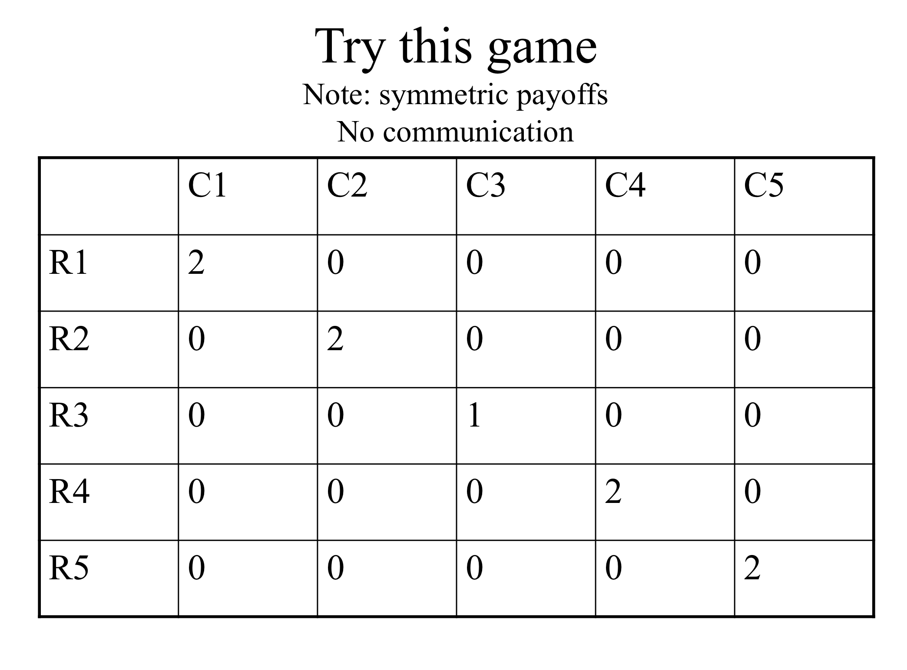

13 Game Theory (L11)
13.1 Coverage outline
NS Chapter 5 (more or less the whole chapter) and additional concepts/readings below
NS: chapter 5
5.2 Basic concepts
Additional to text: Dominance, rationalizability1 gg
5.3 Equilibrium
- no focus on COMPUTING mixed strategies, but understand when they will exist and what they mean
5.4 Illustrating basic concepts Note: Read application from a beautiful mind!
5.5 Multiple equilibria
5.6 Sequential games
Repeated games (finitely and infinitely)
Games in a continuous action space
Experimental evidence (and evidence from the real world); supplements
2019: There will be a problem set, which will be covered in tutorials in part. Game theory will also be heavily featured on the final assessment (and the mock final).
Putting this in the context of this Module:
Basic tools, the economic approach
The simple classical model, welfare results
Market failures (Monopoly, Public Goods)
Extensions of simple model: ‘Die roll’ Uncertainty
\(\rightarrow\) and now Strategic uncertainty \(\rightarrow\) Game Theory
Finally, behavioural economics (time-permitting)
Note: Time permitting, in the latter part of these lectures we will play real and hypothetical games. I will pay small amounts of money (if I remember to bring coins). It will be more fun if you have the clickers available and the chat window open/available
‘ILO: Module-specific skills’
detailed knowledge and understanding of intermediate microeconomic theory … apply economic reasoning to the analysis of economic questions and policy
\(\rightarrow\) Game theory is core
Many of you have seen game theory before; we will be more precise here, and introduce several concepts you have not seen before
Skills:
…value of using economics in assessing the external environment for business decision-making
communicate concepts/definitions/arguments in writing
… analytical thought and reasoned discussion
Is game theory useful???
Some people seem to think so:

13.2 Basic concepts (strategic interaction, elements of a game))
Previous: Each individual (consumer, firm, etc) takes all others’ choices as given
- market price, demand curve, etc.
Now: Consider ‘strategic interaction’
- My best choice may depend on your choice
- And vice versa
- Sequential games: My earlier choices may change your later choices
13.3 Some examples
Is it better to get lunch at Comida or Pret?
What if your friends are going to Comida?
What if everyone and her cousin are going to Comida, so the queue is miles long?
What should Tim Cook charge for his new Iphone?
Does it depend on whether Samsung and LG…
… Sell their phones for £200, or £1000, or go out of business?
Think about:
Find a situation in business, government, fiction, history or your own life …
where one party’s optimal choice depends on what another party does.
Write it down, give 1-sentence explanation of why it involves ‘strategic dependence’
Some possible examples:
Life:
- Ask out your crush or not?
Politics:
Country makes war or peace? Soldiers fight or run away?
Run for office or not? Party contests a seat? If so, how much to spend on campaign?
Standard Economics:
Amount to bid at a first-price auction?
Whether Robotic Chef opens a new branch in Exeter, and where?
How hard to work towards a promotion at your job?
These are very interesting problems, but does Econ and Game Theory have the solutions?
What game theory can do (wet blanket)

Game theory gives us a language and framework for analyzing strategic situations
The ‘solution concepts’ can be said to make ‘predictions’ under given assumptions.
The idea of ‘equilibrium’ is defined as a baseline
Dr. Reinstein says: Sometimes overrated as a tool for predicting how people/firms will actually behave.
It often makes multiple predictions, or predicts ‘mixed strategies’ (randomisation).
Real-world and experimental choices are often/arguably predicted poorly by classical game theory.
For example, standard game theory says chess has a pre-determined outcome and is a bit boring (ok, you may agree about the latter).
Adv: But there are complicating issues making it difficult to asses the predictions of game theory.
Particularly because monetary payoff may not be the same as utility payoffs … this can make real-world predictions unclear.
Particularly if there are social preferences or fairness preferences.
We also see failures to coordinate,
failure to take higher-order cognitive steps
and preferences over the manner decisions are made.
These make Game Theoretic predictions difficult.
13.4 Four elements describe a game
Players
Strategies
Payoffs
Information
- Players
- the decision makers in the game
\(2, 3, ... N\) players

Who are the players in the game ‘Chicken?’
- The north-facing car ‘North’ and 2. the south-facing car ‘South’
- Strategies
- a player’s choices in a game (at each ‘decision node’)
in simple games strategies are basically the same as actions
but strategies may be ‘a plan contingent on what another player has done’
and strategies (called ‘mixed strategies’) may involve randomization
What are the strategies/actions in Chicken? For both N and S, two actions – Pull-off, Straight.
- Payoffs
The utility to each player arising from the combination of each player’s strategies (and chance) in the game
- May include both ‘money earned’ and other considerations; all this is summarised in the payoff numbers
Be careful: The goal of each player is to obtain the largest payoff that she can obtain (not just to ‘win’)
E.g., each player prefers to get 2 in utility and have the other player get 8 than for both to get 1
In this context it is typically not helpful to complain ‘I don’t think players will maximise their payoffs, because they also care about how others do, etc.’ Whatever it is they care about can be expressed in the theoretical payoffs.
However, these concerns are relevant to experiments that may incorrectly assume participants are maximising only their monetary payoffs.
What are the payoffs in chicken?
Both pull-off \(\rightarrow\) Tie
N Straight, S pulls off \(\rightarrow\) N ‘wins’, S ‘loses’
N pulls off, S straight \(\rightarrow\) N ‘loses’, S ‘wins’
Both straight \(\rightarrow\) crash
To meaningfully convey this game payoffs must follow: Win \(\succ\) tie \(\succ\) lose \(\succ\) crash
Here is an example of payoffs that capture the essential strategic considerations in ‘Chicken’ (payoffs written as a matrix)
| Pull off | Straight | |
|---|---|---|
| Pull off | (0,0) | (-1,1) |
| Straight | (1,-1) | (-10,-10) |
## [1] "(0,0)" "(1,-1)" "(-1,1)" "(-10,-10)"
Note that what will matter are the relative payoffs* and not the absolute levels… (at least, if we ignore ‘mixed strategies’ for now).
- Information
what each player knows, at a particular point in the game, about payoffs and previous actions
- For sequential games, players may or may not know other players’ previous actions
(in this module we will only cover the case where they do know previous actions taken)
In simultaneous games (like Chicken, at least as we are envisioning it) there are no previous actions, so this is irrelevant, and we assume in general for this module that “all players know all other players’ payoffs”.
13.5 Illustrating Games
The Prisoners’ Dilemma: Normal form
The original story:
Two individuals are arrested for a crime. They both know that they can only be convicted for a lesser crime, for which they get 2 years in jail. DA (Chief Crown Prosecutor) puts them in separate rooms and offers each the same deal. If you confess and your partner stays quiet you will only get 1 year in jail and they will get 10 years. oIf you both confess you will each get 3 years.
What would you do? What would most people do? What does game theory predict?
Which outcome is definitely NOT Pareto-optimal (for the prisoners)?

Normal form payoff matrix (also called ‘matrix form’)
Payoff convention: listed in the order (row’s payoffs, column’s payoffs)
A Prisoner’s Dilemma be like85
Two Players: (A and B, row and column, whatever)
Strategies (Actions): ‘Cooperate’ (C) or defect (D)
In normal form:
| Cooperate | Defect | |
|---|---|---|
| Cooperate | (R,R) | (S,T) |
| Defect | (T,S) | (P,P) |
To be a prisoner’s dilemma game the payoffs must satisfy \(T > R > P > S\)
I.e., Temptation \(>\) Reward \(>\) Punishment \(>\) Sucker
The Prisoners’ Dilemma: Extensive form
We can depict the same game in another format which we call the ‘extensive form’:

Above: the oval (usually this is given as dashed lines) depict the ‘information set’/
Sequential moves games without knowledge of previous moves are essentially equivalent to simultaneous move games. Here, B may ‘move second’ but he doesn’t know A’s move (in the graphic above, he doesn’t know “which side he is on”), so it’s as if this is simultaneous.
Order only matters if you observe the earlier action
However, typically, we use the extensive form for sequential games and the “normal form” (basically, the matrix form) for simultaneous games.
Note: This fancy terminology seems confusing and unnecessary. The reason for it involves more formal definitions of ‘extensive’ and ‘normal’ games and some deeper technical issues that we skip here.
13.6 Common knowledge
- What all players know, and
- all players know that all other players know,
- and all players know that all other players know that all other players know,
- and all players know that all other players know that all other players know that all other players know,
etc.
Note: By the way, we always assume that the rules of the game are common knowledge.
Why is common knowledge important?
Among other things, you may be stuck on an island ‘with 100 blue-eyed people, 100 brown-eyed people, and the Guru’ - XKCD_link - XKCD solution link - Rob Heaton version, more violent - Ted-ed video
Warning: this puzzle will do your head in
knitr::include_graphics(“picsfigs/blue-eyed.png”)
There is an island with 1000 people. - 100 of them have blue eyes, 900 have brown eyes - There are no reflective surfaces
By custom or law:
He who knows own eye colour must commit suicide the next day in the town square No one can discuss another person’s eye colour.
Now an American tourist visits, and says “It’s so nice to see one or more people with blue eyes in this part of the world”.
Q: What effect, if any, does this faux pas have on the island?
Ans: If his statement is ‘common knowledge’ then all 100 blue-eyed people will kill themselves on day 100 after the speech.!
- A’s Best Response (BR) to strategy S:
A strategy for player A that gives him the highest payoff of all his possible strategies, given that the other player(s) play S
Note: The BR is a function of the others’ strategies S; it may take a different value for each strategy the others play.
13.7 Dominant, dominated strategies and rationalizability
Note: Iterated strict dominance and rationalizability are NOT covered in the NS text, but I want you to learn it. As a prediction it is much easier to justify than Nash Equilibrium.
- Dominant strategy
- A single strategy that is a best response to any of the other player’s strategies.
- A simple prediction: a ‘rational’ player will play a dominant strategy, if she has one.
- Dominated strategy (not in text!)
- Strategy A is dominated by strategy B if B yields higher payoffs for any of the other player’s strategies
- A simple prediction: a rational player will never play a dominated strategy
Why?: because a dominated strategy cannot be optimal for any belief about what the other player(s) will do
With only two strategies to choose from these concepts are the same.
With more than two, if there is a Dominant strategy this means that all other strategies are dominated by it. We see this in examples below.
What is the prediction of ‘players play dominant strategies’ in Prisoner’s dilemma
Here it clearly predicts that both will confess. However, in other games this concept may have no clear prediction

Consider: What does ‘players play dominant strategies’ predict above? What about ‘players never play dominated strategies’?
13.8 Rationalisability/ Iterated strict dominance (not in NS text!)
Extending this …
Rationality assumption: the players are rational.
We know rational players will not play dominated strategies The players themselves know this.
Common Knowledge of Rationality assumption:
The players know all other players are rational. The players know all players know all players are rational. The players know (all players know … ad infinitum) all players are rational.
- Thus the players know what the other players will never do, and eliminate these from consideration
- The players will not play a strategy if another strategy is always better against this reduced set of possibilities
- Etc.
This process is called ‘Iterated Strict Dominance’ (ISD) We will call strategies that survive ISD ‘rationalizable’ strategies
Adv: There are differences between ‘rationalizable’ and ‘survives ISD’ but for our purposes these are the same
ISD example; this may yield a unique prediction


However, there may be no dominated strategies, or there may be some, but still ISD may leave many possibilities:

13.9 Equilibrium
Market equilibrium (review): given the equilibrium price and quantity, no market participant has an incentive to change his or her behaviour.
In strategic settings, we have a similar concept:
- Nash equilibrium (NE)
- A set of strategies, one for each player, that are best responses against one another
If I play my BR to your chosen strategy and you’re playing your BR to mine, neither of us has an incentive to deviate — an equilibrium.
All games have at least one Nash equilibrium
- But it may be an equilibrium in ‘mixed strategies’ (involving randomisation)
Caveat: we might not expect such play to actually occur (particularly not in one-shot games)
In fact, 2-player games will have an odd number of equilibria; you can see this by looking at the crosses of the BR functions
13.9.1 Two ways to find the Nash equilibrium (NE)
- Inspection: Check each outcome one by one. See if either player has an incentive to unilaterally deviate. If not, it’s an equilibrium.
- Underline method: For each player underline the payoff he would get if he played his best response to each of the other player’s actions. Any outcome where there are two underlines is the outcome of an equilibrium strategy profile.
Note this is the same ‘prediction’ as dominant strategies, but the interpretations are different; This is not by accident, there are general results, some of which we discuss below…
Recall again that the NE, and the prediction of ‘players play dominant strategies’ (also ‘rationalisability’) yields the single outcome that is clearly NOT pareto optimal. Lesson group and individual interests don’t always align
Exercise: Find equilibrium via each method:
13.9.2 Relationship between dominant strategies, rationalisability, and Nash equilibrium
If eliminating dominated strategies yields a single prediction for each player, these strategies are a Nash equilibrium. The same holds for eliminating by iteration (rationalizability) … if this leads to a unique prediction, it’s a NE.
However, not every Nash equilibrium involves dominant strategies
13.9.3 Efficiency and the PD (redux)
Lesson: The group interests and individual interests do not always align
In the Prisoner’s dillemma, if the players were allowed to communicate what would seem to be the best outcome?
Both staying silent would be better for both than the outcome in the NE: 2 yrs vs. 3 yrs
However binding agreements are not allowed, and “cheap talk” communication should not help… (There’s a game show about this! People ‘promise’ they will share and then they often turn around and steal.)
13.10 Coordination and anti-coordination games
Coordination: Battle of the sexes (BOS)
 - to make it more PC, assume it is a very violent ballet and a very gentle boxing match
- to make it more PC, assume it is a very violent ballet and a very gentle boxing match
Anti-coordination: Matching pennies (odds/evens)

Note: Underline best responses, show no pure strategy NE here
13.11 Mixed strategies
Note: Please know the basic principles; you don’t need to COMPUTE mixed strategies* (although going through this may help you understand it better)
- Pure strategy
- Consists of a single action played with certainty
- Mixed strategy
- Assigns a probability to each possible action
Remember: there is always at least one NE. If there is no pure strategy NE, there will be a NE in mixed strategies.
Matching pennies: mixed strategies
Intuition
If you choose heads/tails half the time then I’m indifferent between heads or tails. Thus, choosing heads half the time is among my best responses.
If I choose heads half the time then you’re indifferent between heads/tails. Thus choosing heads half the time is among your best responses
So, technically, each of us choosing heads half the time is a NE. (But it is called a ‘weak’ NE because either of us would do no worse if he deviated alone.)
Battle of sexes: mixed strategies
Note: Wife wants to end up at the same place as her husband but doesn’t know where he is going.
If she believes that he will always go to the ballet she should always go to the ballet.
If she believes he will always go boxing, she should go boxing.
What other beliefs may she have?
We want to derive the best response functions, and find the intersection(s) of these.
Let \(h\) represent the probability husband chooses Ballet
Wife’s BR:
- Wife chooses Ballet iff her Expected payoff of Ballet > Expected payoff of Boxing
I.e., \(2h > 1- h\), i.e, \(h > 1/3\)
Thus, wife goes to Ballet if she believes husband goes to Ballet more than 1/3 of the time
If she thinks he goes below 1/3 of the time she goes to Boxing
If she thinks he goes exactly 1/3 of the time she is indifferent

Note: This plots the value of w that best responds to h; the probability the wife goes Ballet given the probability the husband goes Boxing.
Let \(w\) denote the probability wife chooses Ballet
Husband’s BR:
Husband chooses Ballet iff his Expected payoff of Ballet > Expected payoff of Boxing
\[1w > 2- 2w\], i.e., \[w > 2/3\] … for these payoffs
Thus, husband goes to Ballet if he believes wife goes Ballet more than 2/3 of the time
If he thinks she goes less than 2/3 of the time he goes to Boxing
If she thinks he goes exactly 2/3 of the time he is indifferent
Note that now that we are considering mixed strategies the ratios of the payoffs may matter in computing the equilibrium mixing probabilities, and not only ‘which is larger’. Recall that this also was the case when we considered expected utility over uncertain outcomes.


Shortcut to computing this: only someone who is indifferent will randomise. (Otherwise they must strictly prefer one or the other action, so ‘mixing these’ cannot be optimal.)
Above, \(h=1/3\) makes wife indifferent, \(w=2/3\) makes husband indifferent
What’s all this rot?
Mixed strategies are not about ‘being unpredictable’, in spite of what some texts say ; these are one-shot games!
Some texts and authors make this point about ‘unpredictability’ but others disagree (including myself). Making sure that it is impossible to predict your later play from your previous is only important if you are playing the same game repeatedly, and being observed.
It makes a bit more sense if we think about ’populations.
Suppose in a population 1/3 of men go to Ballet and 2/3 of women go to Ballet: … these ratios are ‘stable’; no reason for systematic changes. On the other hand, if men always went to boxing and women to ballet this is not stable. A husband would be better off going to ballet … so the ratios should change over time.}
Computing payoffs with mixing
Remember, formally, a NE specifies strategies (strategy ‘profiles’) not payoffs
In the BOS the pure strategy equilibria were
- Husband: Boxing, Wife: Boxing
- Husband: Ballet, Wife: Ballet
The mixed-strategy NE was:
- Husband: go Ballet with probability h=1/3, Wife: Go Ballet with prob w=2/3.
The payoffs to these were, respectively
Husband: 2, Wife: 1
Husband: 1, Wife: 2
… ??
Payoff to the mixed strategy:
Payoffs are utilities: thus under the Expected Utility model we sum the utility of each outcome \(\times\) probability of that outcome
- Prob(Both go Ballet) = \(w \times h = \frac{2}{3} \times \frac{1}{3} = \frac{2}{9}\)
- Prob(Both go Boxing) = \((1-w)(1-h) = \frac{1}{3} \times \frac{2}{3} = \frac{2}{9}\)
- Prob(Wife Ballet, Husband Boxing) = \(w(1-h) = \frac{2}{3} \times \frac{2}{3} = \frac{4}{9}\)
- Prob(Wife Boxing, Husband Ballet) = \((1-w)(h) = \frac{1}{3} \times \frac{1}{3} = \frac{1}{9}\)
Thus, under the mixed strategy NE play:
\[U_{husb} = \frac{2}{9} \times 1 + \frac{2}{9} \times 2 + \frac{4}{9} \times 0 + \frac{1}{9} \times 0 = \frac{6}{9} = \frac{2}{3}\] \[U_{wife} = \frac{2}{3}\] (Wife’s payoff inferred from symmetry of problem or similarly calculated)
13.12 How do you solve a problem like multiple-equilibria?
Above (BOS), there are three equilibria: both play Boxing, both play Ballet, and the mixed strategy
- Are any of these more reasonable as predicted outcomes?
In-class experiment: BOS & coordination; need 2 volunteers

‘The Big Game’

Outcomes
Recent year (2016)
| Share chose | .. squared | Pay if match | E(Pay) | |
|---|---|---|---|---|
| 1 | 0.26 | .068 | 2 | 0.52 |
| 2 | 0.21 | .044 | 2 | .42 |
| 3 | 0.11 | .012 | 1 | .11 |
| 4 | 0.16 | .026 | 2 | .32 |
| 5 | 0.26 | .068 | 2 | .52 |
| Wtd avg | 0.22 | 0.05 | 0.42 |
Multiple equilibrium and refinements
We refer to refinement criteria and focal points. For example…
‘Choose the equilibrium with the highest payoffs for both?’ In BOS this rules out mixing (payoffs 2/3, 2/3 for h,w respectively). But it doesn’t say whether we should predict Box, Box (payoffs 2,1) or Ballet, Ballet (payoffs 1,2)
Choose the ‘symmetric equilibrium?’ … here, mixing
Choose the one that seems like a ‘focal point’? (remember the ‘big game’)
Is there a focal point?
In-lecture ‘experiment’:
A year after graduating you come back for Alumni Weekend. You are supposed to meet the veterans of this module for a night of festivities but can’t remember where or when. The internet does not exist.
Where do you go? Students: write it down on a piece of paper Now type what you wrote in to the chat window
What if you are meeting for a reunion in New York City, and no one has internet or phone access? Where do you go? Write it down. Type it into the chat window.
13.13 Sequential Games
Note: don’t worry about the ‘normal form’ of sequential games; we will only use the extensive form for these
How does the Battle of Sexes game change if Wife chooses first, Husband observes her choice, and then he chooses
What do you think will happen? Vote (clickers):
- A. Wife: Ballet, Husband: Box
- B. Wife: Ballet, Husband: Ballet
- C. Wife: Box, Husband: Ballet
- D. Wife: Box, Husband: Box

Note: Remember, it’s a one-shot game … unrealistic within a marriage of course
- The wife has two strategies: Ballet or Boxing
- The husband has four contingent strategies, but we focus on what he will do in each of his two possible ‘decision nodes’
Here we see there is a ‘first-mover advantage’.
These concerns also apply to politics, and the games can of course include multiple players (this was from 2018… can you think of comparable examples from 2019-20?)
Cameron’s decision to allow a referendum, followed by politician’s (Boris etc) decisions to choose a side?
May’s negotiations with the EU (Barnier), followed by the parliament’s ‘meaningful vote’, followed by ??
US Supreme court fight over Brett Kavanaugh, the sequential decisions of the last ‘swing’ senators
- Proper subgame
- Part of the game tree including an initial decision not connected to another (in an oval or dashed lines) and everything branching out below it.
- I.e., each ‘game’ starting from a point where a player knows where he is (knows previous choices)
- Subgame-Perfect Nash Equilibrium (SPNE)
- Strategies that form a Nash equilibrium on every proper subgame.
You can solve for the *outcomes consistent with this with ‘backwards induction’ (BWI)
Solve for best move for last decision node (proper subgame)
Given these, solve for best response for previous decision node
Etc.
Example: BWI for Sequential Battle of the Sexes


Note that the SPNE in a sequential game always involves ‘best responses’. I think this makes SPNE more credible as a prediction in sequential games than NE in simultaneous games.
Next we can formally the specify (SP)NE strategies for the above game:
NE, not SP: {Wife: Boxing; Husband: Boxing, Boxing}
SPNE: {Wife: Ballet; Husband: Ballet, Boxing}
(reading Husband’s decision nodes left to right; please specify this)
It can get fancier

Note: you can ‘build these games’ on if you like

In ‘normal’ (matrix form), stating complete contingent strategies:

And the ‘abbreviated strategies’; leaving out decision nodes ruled out by a player’s own previous choices as specified in the strategy:

The SPNE; ‘state the complete contingent strategies’
A: S1, N3, N5
B: s2, n4, n6
…
Where actions are stated in the order of the decision nodes for each player
13.14 Repeated games
Definite time horizon
- Is there a way in which we can sustain cooperation in a finitely repeated Prisoners’ Dilemma?
- No.
Suppose we repeat the Prisoners’ Dilemma a finite (T) number of times, e.g., 10 times.
What is the subgame perfect equilibrium?
Via Backwards Induction (BWI) : - In period 10 (period T) both players confess as it’s the dominant strategy - In period 9 (period T-1) - Knowing period 10 (period T) decision is unaffected by earlier moves, players confess in period 9 (their dominant strategy) - … etc, all the way back to period 1
Thus each player will Confess in every period. Not possible to sustain cooperation.
13.15 Trigger strategies
- Trigger strategy
- Strategy in a repeated game where one player stops cooperating in order to punish another player for not cooperating.
- Grim trigger strategy
- If the other player fails to cooperate in one period, play the (undominated) action that makes her worse off in all later periods
13.16 Repeated Games: Indefinite or infinite time horizon
- Game is played repeated for a potentially infinite number of periods
- But there is a ‘discount factor’ \(g\)
- \(g\) may represent the ‘probability the game is repeated another time’
Note: With an infinitely-repeated game with no discounting, payoffs would be potentially infinite, making it hard to decipher.
It’s realistic to imagine people discount the future, and we don’t know how long these repeated interactions last; people die, move away, etc.
At this point it is worth a quick revision of what ‘discount factors’ mean. This is a basic concept in economics an finance. It is covered briefly in NS chapter 7 under ‘present discounted value’. There is a good Khan academy treatment of this, and it is a basic concept you can look up in many other places. I probably won’t get into the details of discounting beyond the discussion of repeated games.
Indefinitely repeated Prisoners’ Dilemma
Consider the following trigger strategy (for both players):
- Stay silent as long as the other player stays silent.
- If one player confesses, both players will confess from them on.
- Is this a SPNE?
- In each subgame after someone confesses, we play confess in all stage games (forever on), which we know is a NE
- What about periods where no one has confessed (yet)?
How do we know both players playing ‘confess forever’ is a SPNE?
Starting in any subgame, knowing the other player will confess, I will want to confess (for that period’s payoffs).
I also know that given his strategy, playing ‘silent’ in this period will not have any impact on my later payoffs.
The payoff from staying Silent (cooperating) each period is:
\[-2 \times (1 + g + g^2 + g^3 + ... )\]
The payoff from Confessing right away (after which both players Confess always) is:
\[ -1 + -3 \times (g + g^2 + g^3 + ... ) \]
Formula for a geometric series (where \(0<g<1\)): \(g + g^2 + g^3 + g^4 ... = g/(1-g)\)
Note on Maths: The standard derivation of this, which is pretty neat, is in the text.
This formula is an important one in economics (and beyond), particularly for discounting a constant stream of payoffs, e.g., stock dividends
Thus cooperation in a single period is ‘weakly preferred’ (at least as good) if
\[(-2) \times (1 + g + g^2 + g^3 + <br> <br> \bigskip ) \geq (-1) + -3 \times (g + g^2 + g^3 + ...)\]
\[g + g^2 + g^3 + ... \geq 1\]
Note on intuition for the second formula: left side is loss of future payoffs (-3 vs -2 forever from next period).
Right side is gain in that period (get -1 rather than -2))
\[g/(1-g) \geq 1\]
\[g \geq \frac{1}{2}\]
So, cooperation can be sustained as long as the probability of play continuing is high enough; here, above 1/2.
NOTE: Just because it can be sustained doesn’t mean it will be; there are other Subgame-Perfect Nash equilibria, including ‘always confess’.
NOTE: This setup is directly applied to the case of ‘a cartel’ of firms tacitly or overtly colluding to sustain high prices!
13.17 Continuous Actions
As you can see from mock exams etc., game theory with continuous actions is something I may test you on!
2019-20: However, I won’t ask you to derive such best responses functions on the final exam… I’ll give these to you, perhaps graphically.
Game theory applied to cases where people choose ‘continuous’ actions
Firms choose a price or quantity of a product, or a level of R&D, etc.
Households voluntarily contribute to a local public good (e.g., neighborhood watch), or choose how many fish to catch from the shared pond
Nations decide how large an army to build
\(\rightarrow\) Payoff functions, continuous ‘best response functions’; rather than a payoff matrix
Nash equilibrium: Again, choices that are best responses to one another
Dominant strategies: Again, a strategy that is preferred against any other player(s)’ strategies
(Note: Here the iterated dominance or ‘rationalizability’ is harder to compute; we won’t cover this.)
A general method for finding NE foe continuous games with differentiable payoffs, finding NE:**
Write down payoff functions. (Differentiable? If not it becomes more difficult.)
Maximise each player’s payoff with respect to own strategy; the other player’s payoff are a fixed ‘parameter’ here \(\rightarrow\) Players’ best-response functions.
Look for intersection(s) \(\rightarrow\) Nash equilibrium (equilibria)
Source: https://www3.nd.edu/~tjohns20/gametheory_SP13/slides3.pdf}
With two players:
\[s_i^\ast=B_i(B_-i(s_i^\ast))\]
If the game is symmetric this is a ‘fixed point’.
Tragedy of the Commons
2019-20: I’m doing the computations here to aid your understanding, but you won’t need to compute this on the final.
Shepherds A and B raise \(s_A\) and \(s_B\) sheep, respectively, in the same meadow
- More sheep graze \(\rightarrow\) the less grass for each, thus less wool/milk/meat per sheep
Benefit from each sheep raised: \(120-s_A-s_B\)
Total benefit from raising \(s_A\) and \(s_B\) sheep:
- Shepherd A: \(s_A(120-s_A-s_B)\)
- Shepherd B: \(s_B(120-s_A-s_B)\)
Marginal benefit of ‘me adding’ another sheep:
- Shepherd A: \(120-2s_A-s_B\)
- Shepherd B: \(120-s_A-2s_B\)
For simplicity, assume zero marginal cost
Set the marginal benefit equal to the marginal cost (here zero)
- Shepherd A: \(120-2s_A-s_B = 0\)
- Shepherd B: \(120-s_A-2s_B = 0\)
Rearrange the above to solve for the best response functions
- Shepherd A: \(s_A = 60-\frac{1}{2} s_B\)
- Shepherd B: \(s_B = 60-\frac{1}{2} s_A\)
Solve for the Nash equilibrium:
\[s_A = 60-\frac{1}{2} s_B\]
Plug this value of \(s_A\) into the BRF for B and solve for \(s_B\), then for \(s_A\)
\[s_B = 60-\frac{1}{2} s_A = 60 - \frac{1}{2}(60-\frac{1}{2} s_B)\]
\(s_A* = s_B* = 40\)

Shepherd A: \(s_A = 60-\frac{1}{2} s_B\)
Shepherd B: \(s_B = 60-\frac{1}{2} s_A\)
\(\rightarrow s_A* = s_B* = 40\)
Why the “Tragedy” of the Commons?
Some examples…
Firms choose a price or quantity of a product, or a level of R&D, etc.
Households voluntarily contribute to a local public good (e.g., neighborhood watch), or choose how many fish to catch from the shared pond
Nations decide how large an army to build
\(\rightarrow\) Payoff functions, continuous ‘best response functions’; rather than a payoff matrix
To maximise total payoffs we set \(S=s_A+s_B\) to maximise \[S\times(120-S)\]
Concave problem, set first-derivative to zero: \[120 - 2S = 0 \rightarrow S^*=60\]
Leading to total payoff \(60 \times (120 - 60) = 3600\). - If they split this evenly (each graze 30), they get 1800 each. - This is the ‘continuous’ action analogy of the Prisoner’s dilemma
- If split evenly (each graze 30), get 1800 each.
- This is the ‘continuous’ action analogue of Prisoner’s dilemma
Note that both the PD and the above ‘tragedy of the commons’ game illustrate a similar point: Individuals acting in their own private interest may end up each doing worse off than if they could cooperate or collude.
Sadly, this problem (literally!) is still relevant. See, e.g., “Morocco: Managing the ‘commons’ Livestock and Pasture Development Project in the Eastern Region”

“Strategic complements” and “strategic substitutes”
The slope of these ‘best response functions’ tells you whether the two players ‘choice variables’ (above, sheep) are Strategic complements or Strategic substitutes.
If ‘when you choose more I prefer to choose less’ then these choices are strategic substitutes. This is the case in the example and diagram above… thus both BR functions are downwards sloping.
If ‘when you choose more I prefer to choose more also’ then these choices are strategic complements. In such a case best-reseponse functions will slope upwards.
(In principle, the choices could also be strategic substitutes starting from some points, some combinations of strategies in the ‘strategy space’ strategic complements starting from other points. )
13.18 Experimental evidence: What is a laboratory experiment in Economics?
E.g., FEELE lab at Exeter
- Real incentives (typically small)
- Typically student subject pool
- No deception protocol


Various experimental goals
- Measure preferences (risk, time, social preferences…)
- Asses theoretical predictions (classical and behavioural), including game theory
- Also see ‘likely’ outcomes where theory has no prediction or predicts multiple equilibria
- Critical to assert ‘control’ over payoffs for this
- Understand cognitive processes in economic realm
- ‘Test’ institutions and mechanisms (e.g., auctions, markets)
13.18.1 Laboratory evidence 1: Prisoners’ dilemmas
Cooper et al (1996)
- Players cooperated even in anonymous ‘one-shot’ games (different opponents each time)
- Cooperation declines somewhat over time, but not to zero
- Mix of other-regarding and selfish types
Notes: Results are similar for experiments involving contributions to public goods.some cooperation, declining over time but not to zero, and a mix of players who never contribute and many ‘reciprocal’ types.

13.18.2 Laboratory evidence 2: Ultimatum game
- Proposer goes first, proposes a split of the ‘pie’, anything between 0%-100% and 100%-0% inclusive.
- Responder can accept or reject and get nothing
Q: What does SPNE predict (use backwards induction)?
Ans: It predicts the proposal offers the lowest (positive) amount and the responder accepts
What happens in experiments?
- 50-50 split is the most common offer
- Responders tend to reject offers giving them less than 30%, even when this is a lot of money
Potential explanations
- Fairness concerns; monetary payoffs may not represent actual payoffs
- Proposers may anticipate this
13.18.3 Issues in lab experiments
What is being measured?
- PD: Does money measure the true payoffs? Do we have the ‘control’ to test the model?
- Other-regarding preferences; may be unobservable.
- ‘Experimenter demand’: desire to please experimenter, aware of study goals?
External generalisability
- Relevance of subject-pool (participants)
- Do they resemble the ‘real world’ group of interest? (e.g., firms, countries, taxpayers, voters, home-buyers)
- Right preferences and experience?
- Relevance of environment
- Are the (small) stakes relevant?
- Are the right ‘environmental characteristics’ present?
- Does the ‘imposed model’ apply?
- Observed self-conscious environment, perhaps made aware of contrasts
Note: a recommended reading is ‘Ten Little Treasures of Game Theory and Ten Intuitive Contradictions’ Goeree and Holt, 2001
If you are particularly interested, skim or read the introduction of any of the ‘Handbooks’ like ‘Handbook of Experimental Economics’
Note to non-native-English speakers… I am shamelessly pandering to the youth here by trying to use their jargon. ‘Be like’ is not proper usage in the Queen’s English↩